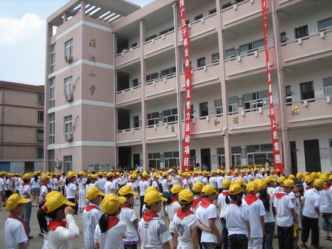
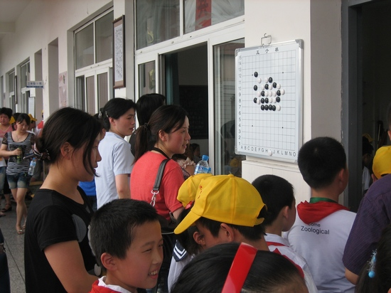
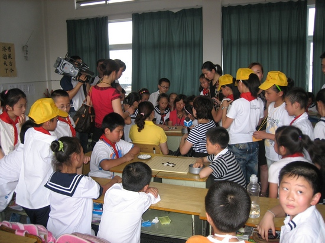
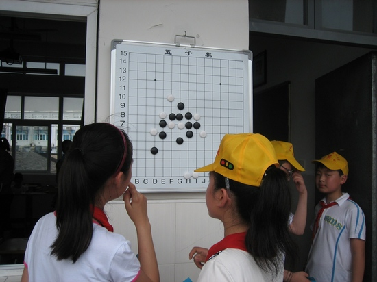
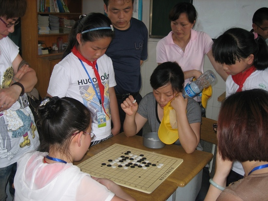
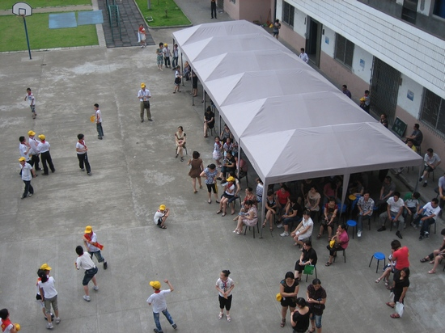

五子棋校园行走进藕池小学 有孩子没选上擂主哭了鼻子
#1 五子棋校园行走进藕池小学 有孩子没选上擂主哭了鼻子 作者：有志青年 发表时间：2011-6-10 22:31:36
商报讯（记者 蒋继斌）昨天下午，全国青少年五子棋校园行活动走进鄞州藕池小学，数百名学生和家长在五子棋的对弈中，度过了一个充满乐趣的下午。
五子棋校园行活动是由体育总局棋牌运动管理中心举办，在宁波的活动由市体育局、青少年宫和舞弈五子棋俱乐部承办。昨天，在藕池小学举行的主要是五子棋的攻擂挑战赛。擂主一共21人，其中藕池小学选拔了18个人，舞弈俱乐部派来了3个高手。藕池小学校长梁益飞告诉记者，该校虽然开展五子棋的时间不长，只有几个月，但是学生们的兴趣非常浓。“这次攻擂挑战赛，我们举行了一个选拔赛，会下的小朋友都参加了，最后选出了18个水平还可以的当擂主。有的孩子没选上，都当场哭了鼻子。”对于学生们参与的热情，梁益飞也有些意外。
攻擂挑战赛开始后，擂主们按照级别（该校攻擂赛按照水平分为A、B、C三级，C级最高）准备守擂，二年级的吴嘉轩是A级擂主，他蹦蹦跳跳跑到棋盘前，一脸得意的坐下来。记者问他下五子最高兴的是什么？“当然是赢了，”吴嘉轩说，“今天我也肯定还能赢很多盘。”
藕池小学是今年3月开始将五子棋作为学校特色的，梁益飞解释，原因主要是这项运动开发智力，而且上手时间快，对参与者没有太多的要求，普及面也挺广的。“四年级的车佳祺这次是C级擂主，他学五子棋也就几个月，但是现在很厉害。这个孩子记忆力不错，学习成绩也很好，对下棋这样的智力运动接受非常快。反过来，下五子棋对他智力开发也是促进。”梁益飞还专门举了一个例子。
另外，五子棋对场地的要求不高，在藕池小学开展没有什么限制。记者看到，每间教室的外面都挂着五子棋棋盘，上面有经典的走法。梁益飞告诉记者，现在学校每个班级都有几幅五子棋，学生们课余时间都可以下下。该校还准备设置专门的棋室。到下学期，学校计划将五子棋作为一门必修课，每周上一到两个课时。







［ 华夏使者 于 2011-6-10 23:35:56 时花20金币送鲜花一朵］
［ 雨一直下 于 2011-6-11 11:07:30 时花20金币送鲜花一朵］
#2 Re:五子棋校园行走进藕池小学 有孩子没选上擂主哭了鼻子 作者：黄药师 发表时间：2011-6-10 23:01:53
这个棋盘哪里有的买啊！
#3 Re:五子棋校园行走进藕池小学 有孩子没选上擂主哭了鼻子 作者：欧艾沃 发表时间：2011-6-10 23:03:32
我觉得我也去过在这家学校。#4 Re:五子棋校园行走进藕池小学 有孩子没选上擂主哭了鼻子 作者：舍露里 发表时间：2011-6-10 23:51:09
爱伏，你去的不是这家学校，是另一家。非常欢迎你也去这家学校和小朋友们交流。#5 Re:五子棋校园行走进藕池小学 有孩子没选上擂主哭了鼻子 作者：怒剑天心 发表时间：2011-6-11 10:46:14
中原地区的小学生厉害的真那么多嘛?
偶有点不信~~~~那些号称几段的小孩子，算力能有多强？理性思维还没长成熟的吧。
#6 Re:Re:五子棋校园行走进藕池小学 有孩子没选上擂主哭了鼻子 作者：岑小鱼 发表时间：2011-6-11 11:32:54
引用：
原文由 黄药师 发表于 2011-6-10 23:01:53 :这个棋盘哪里有的买啊！
这个似乎是一块铁板上面粘张纸棋盘吧.....
#7 Re:Re:Re:五子棋校园行走进藕池小学 有孩子没选上擂主哭了鼻子 作者：黄药师 发表时间：2011-6-11 11:53:27
引用：看不出来啊！！！！！
原文由 岑小鱼 发表于 2011-6-11 11:32:54 :引用：
原文由 黄药师 发表于 2011-6-10 23:01:53 :这个棋盘哪里有的买啊！
这个似乎是一块铁板上面粘张纸棋盘吧.....
#8 Re:Re:五子棋校园行走进藕池小学 有孩子没选上擂主哭了鼻子 作者：黄药师 发表时间：2011-6-11 11:54:28
引用：
原文由 怒剑天心 发表于 2011-6-11 10:46:14 :中原地区的小学生厉害的真那么多嘛?
偶有点不信~~~~那些号称几段的小孩子，算力能有多强？理性思维还没长成熟的吧。
中原地区指的是哪里？
小孩子嘛，你不能高估他，但也不能轻视他。